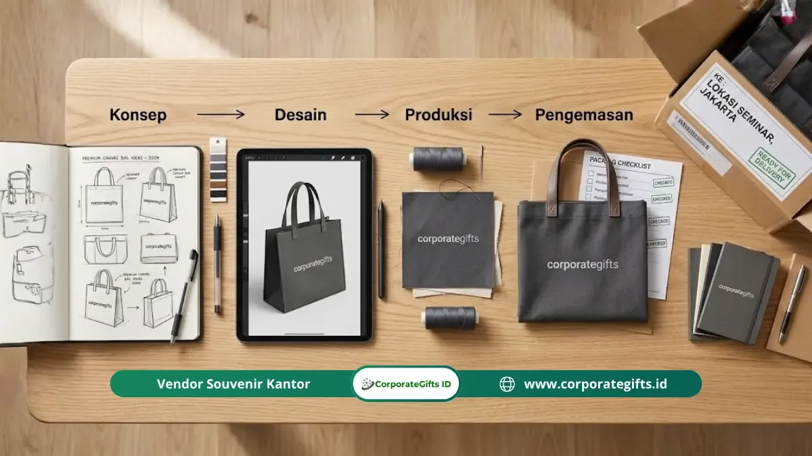

Makna dan Strategi Goodie Bag Seminar Korporat Acara Besar
Corporate Gifts ID - Menyelenggarakan seminar korporat, konferensi nasional, rapat umum pemegang saham (RUPS), maupun simposium industri berskala ratusan hingga ribuan peserta membutuhkan manajemen logistik yang sangat cermat. Salah satu elemen yang secara langsung bersentuhan dengan kepuasan peserta adalah paket goodie bag seminar korporat. Cinderamata ini bukan sekadar buah tangan seremonial, melainkan representasi visual pertama atas profesionalisme, kesiapan panitia, dan citra bergengsi dari institusi penyelenggara.
Cara memesan paket goodie bag seminar yang tepat dimulai dari perumusan konsep tematik, penghitungan alokasi anggaran, penyusunan lembar brief teknis, komparasi kapasitas vendor, pembuatan purwarupa (sampel fisik), pengawasan produksi massal, hingga penataan alur distribusi di lokasi acara. Menjalankan tahapan ini secara sistematis terbukti mampu mencegah risiko keterlambatan pengiriman, ketidaksesuaian warna logo, maupun cacat produksi saat hari pelaksanaan acara.
Kapan Waktu Terbaik Memulai Proses Pemesanan Goodie Bag?
Waktu terbaik untuk menginisiasi proses pemesanan paket seminar kit dan goodie bag korporat adalah 4 hingga 6 minggu (H-28 hingga H-42) sebelum tanggal hari-H acara. Rentang waktu ini memberikan ruang yang sangat aman bagi panitia dan pihak vendor untuk melakukan seleksi penawaran, proses approval mockup digital, pengiriman sampel fisik, pencetakan massal, hingga buffer mitigasi kendala logistik ekspedisi.
Banyak panitia acara korporat terjebak dalam krisis kualitas karena baru menghubungi vendor pada periode H-14 atau bahkan H-7 sebelum acara. Pada durasi yang sangat mepet, vendor terbaik sekalipun terpaksa membatasi opsi item hanya pada sisa stok gudang (ready stock), meniadakan proses approval sampel fisik, serta mengenakan biaya lembur produksi kilat yang membengkakkan anggaran kepanitiaan.
Secara umum, pembagian siklus waktu pemesanan yang ideal terbagi menjadi 5 fase bertahap:
- Minggu Pertama (H-42 s/d H-35): Riset kebutuhan, penyusunan anggaran, dan pengiriman Request for Quotation (RFQ) ke minimal 3 kandidat vendor.
- Minggu Kedua (H-35 s/d H-28): Pemilihan vendor pemenang, pengiriman file logo master, dan pembuatan sampel fisik berlogo.
- Minggu Ketiga (H-28 s/d H-21): Evaluasi sampel fisik, revisi minor jika diperlukan, dan penerbitan Surat Pesanan Resmi (Purchase Order).
- Minggu Keempat & Kelima (H-21 s/d H-7): Produksi massal, proses branding (sablon/UV/grafir), perakitan paket, dan quality control pabrik.
- Minggu Keenam (H-7 s/d Hari-H): Pengiriman ke lokasi penyimpanan panitia, QC akhir acak 10%, dan simulasi alur pembagian di venue.
Langkah 1: Tentukan Konsep, Tema, dan Anggaran Goodie Bag
Langkah awal yang fundamental adalah menetapkan konsep acara, tema visual, serta batasan anggaran belanja per paket (cost per pax). Hal ini akan menjadi kompas utama dalam memilih jenis tas maupun kombinasi item di dalamnya:
- Jumlah Pasti & Buffer Tambahan: Tetapkan jumlah peserta yang terkonfirmasi, lalu tambahkan buffer cadangan sebesar 5% hingga 10% untuk mengantisipasi kehadiran tamu undangan kehormatan, pembicara, media, maupun peserta walk-in.
- Anggaran Bersih per Paket: Tentukan alokasi biaya per paket secara bersih di luar biaya pengiriman ekspedisi dan pajak PPN.
- Segmentasi Profil Peserta: Sesuaikan item dengan profil audiens. Konferensi eksekutif C-level tentu memerlukan leather binder dan smart tumbler premium, sedangkan workshop teknis mahasiswa lebih mengutamakan totebag kanvas tebal dengan memo pad ringkas.
- Mekanisme Pembagian: Rancang apakah paket akan dibagikan saat meja registrasi awal dibuka, diletakkan langsung di kursi aula sebelum sesi dimulai, atau diserahkan saat peserta menukar kupon kehadiran di akhir sesi.

Kelengkapan item seminar kit dan goodie bag korporat: notebook, tumbler, pulpen metal, dan pouch custom logo.
Langkah 2: Susun Brief Vendor yang Lengkap dan Jelas
Keberhasilan kerja sama B2B sangat ditentukan oleh kejelasan dokumen brief pengadaan. Brief yang terperinci meminimalkan risiko salah tafsir spesifikasi yang dapat berakibat fatal pada hasil akhir cetak logo:
- Spesifikasi Tas Utama: Cantumkan ukuran tas (panjang x lebar x gusset), jenis bahan (misal: kanvas katun 12 oz, spunbond 100 gsm tebal, atau polyester cordura tahan air), warna kain, serta tipe pegangan (tali sumbu, webbing katun, atau die-cut).
- Rincian Item Isi Paket: Sebutkan spesifikasi buku catatan (hardcover deboss atau softcover jilid spiral), pulpen seminar (plastik stylus atau metal laser engrave), lanyard ID card, hingga tumbler minum.
- File Aset Logo Vektor: Sertakan logo resmi dalam format kurva vektor berbasis Adobe Illustrator (.AI), Encapsulated PostScript (.EPS), atau PDF beresolusi tinggi. Hindari mengirim logo dalam format JPEG atau PNG resolusi rendah yang diunduh dari media sosial.
- Panduan Identitas Warna: Cantumkan kode warna resmi korporat berupa Pantone Matching System (PMS) atau kode warna HEX/CMYK untuk memastikan akurasi warna cetak.
Langkah 3: Seleksi dan Bandingkan Minimal 3 Vendor Terpercaya
Dalam pengadaan skala korporat, membandingkan minimal 3 calon mitra penyedia jasa pengadaan seminar kit adalah prosedur tata kelola yang bijak. Langkah ini memberikan gambaran objektif mengenai standar harga wajar, kapasitas mesin produksi, serta kredibilitas layanan.
Evaluasi vendor berdasarkan empat kriteria utama: kecepatan respons representatif layanan pelanggan, kelengkapan legalitas dan faktur pajak perusahaan, portofolio pengerjaan seminar instansi nasional sebelumnya, serta garansi jaminan ganti baru jika terjadi kesalahan cetak dari pihak vendor.
Langkah 4: Minta Sampel Fisik dan Lakukan Revisi Desain
Tahap evaluasi sampel fisik (physical proofing) adalah langkah paling esensial yang tidak boleh dikesampingkan dalam pengadaan volume besar. Meskipun mockup digital 3D terlihat sempurna di layar monitor, karakteristik fisik tinta sablon, ketebalan bahan kain, dan presisi grafir laser hanya dapat dinilai melalui sentuhan nyata.
Saat sampel fisik tiba di meja panitia, lakukan pengujian ketahanan: usap permukaan sablon logo untuk memastikan tidak mudah mengelupas, periksa kekuatan jahitan pegangan tas dengan memberi beban seberat buku dan botol minum, serta uji kelancaran mekanisme resleting dan tombol pembuka botol tumbler.
Langkah 5: Konfirmasi Produksi Massal dan Pantau Progres Terjadwal
Setelah sampel fisik disetujui tanpa catatan (golden sample signed), terbitkan Surat Pesanan Pembelian (Purchase Order) resmi yang mengikat hak dan kewajiban kedua belah pihak. Cantumkan tanggal jatuh tempo serah terima barang paling lambat H-3 sebelum acara dimulai.
Mintalah kontak PIC (Person in Charge) produksi di workshop vendor untuk mendapatkan pembaruan berkala berupa dokumentasi foto dan video saat proses cetak berjalan. Hal ini memastikan proses pengerjaan berjalan tepat waktu sesuai milestone kesepakatan.
Langkah 6: Quality Control Ketat dan Manajemen Distribusi di Venue
Saat pesanan tiba di gudang transit panitia, jangan tunda proses Quality Control (QC). Buka kardus kemasan dan lakukan sampling acak minimal 10% dari total kuantitas paket. Pastikan tidak ada barang yang tertinggal dalam perakitan paket, kualitas sablon konsisten antar kardus, dan kardus pengiriman bebas dari kelembapan atau kerusakan fisik.
Pada hari pelaksanaan di venue konferensi, tempatkan meja distribusi goodie bag di area yang terpisah dari meja registrasi utama jika ruangan terbatas. Langkah ini mencegah terjadinya penumpukan massa peserta di pintu masuk utama ballroom dan memberikan alur sirkulasi ruangan yang nyaman dan profesional.
Tabel Timeline dan Milestone Pengadaan Goodie Bag Seminar
Gunakan tabel panduan milestone kerja berikut sebagai lembar kontrol bagi tim panitia pengadaan perlengkapan acara korporat Anda:
| Fase & Waktu | Aktivitas Utama Panitia | Keluaran (Output Kunci) | Titik Pengawasan Kritis |
|---|---|---|---|
| Fase 1 (H-42 s/d H-35) | Penyusunan anggaran per pax, kurasi item, dan sebar RFQ ke 3 vendor | Proposal harga komparatif & estimasi timeline | Kapasitas produksi pabrik vendor untuk tanggal acara |
| Fase 2 (H-35 s/d H-28) | Pemilihan vendor, pengiriman file logo AI/EPS, dan pembuatan sampel | Mockup digital & 1 paket sampel fisik nyata | Akurasi warna pantone korporat pada bahan kain & metal |
| Fase 3 (H-28 s/d H-21) | Review sampel fisik, revisi minor, dan penerbitan PO resmi | Purchase Order bertandatangan & DP produksi | Konfirmasi ketersediaan bahan baku di pihak suplier |
| Fase 4 (H-21 s/d H-7) | Monitoring progres produksi berkala & perakitan paket | Laporan foto/video progres produksi workshop | Penyelesaian cetak sesuai jadwal tanpa sistem lembur panik |
| Fase 5 (H-7 s/d Hari H) | Penerimaan paket, QC sampling acak 10%, dan simulasi distribusi | Paket tersusun rapi di venue & alur registrasi siap | Keamanan penyimpanan di venue dan kelengkapan buffer kit |
Kesimpulan Praktis
Memesan goodie bag seminar untuk acara berskala besar bukanlah pekerjaan menit-menit terakhir. Keberhasilan pengadaan berakar pada kedisiplinan jadwal kerja, ketegasan brief spesifikasi produk, kerja sama transparan dengan vendor terpercaya, serta pengawasan mutu sebelum barang diserahkan kepada para peserta.
Konsultasikan kebutuhan paket goodie bag seminar institusi Anda bersama kami di CorporateGifts.ID melalui form permintaan penawaran resmi (RFQ) atau hubungi tim customer specialist kami untuk mendapatkan preview mockup digital gratis.
Pertanyaan Seputar Cara Memesan Goodie Bag Seminar Korporat (FAQ)

Ditulis oleh: Arinda Zakia
Senior Corporate Gifting SpecialistSpesialis kurasi paket seminar kit, goodie bag konferensi korporat, dan pengadaan merchandise promosi berskala besar dengan pengalaman lebih dari 7 tahun dalam manajemen rantai pasok B2B.
Lihat Profil Lengkap & Panduan Lainnya